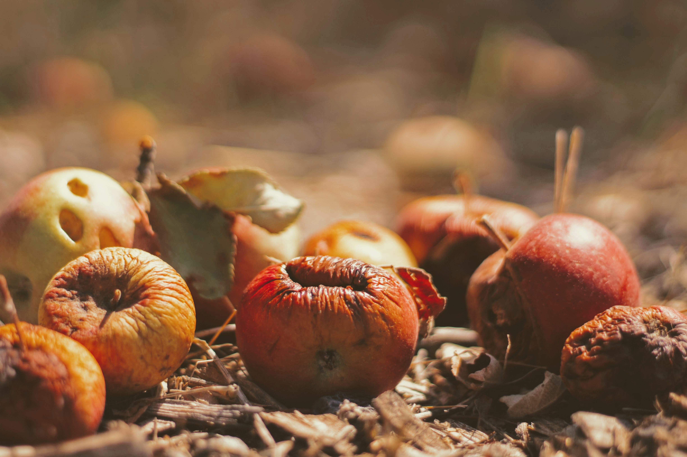

Garantir padrões de consumo e de produção sustentáveis
Até 2050 é estimado que a população global chegará a 9,6 bilhões de pessoas. Para manter o estilo de vida que levamos atualmente, seriam necessários cerca de 3 planetas para disponibilizar todos os recursos!
Uma estimativa global elaborada pela FAO (Organização das Nações Unidas para Alimentação e Agricultura) em 2011 apontou que cerca 30% dos alimentos produzidos do mundo são perdidos ou desperdiçados a cada ano, considerando todos os elos da cadeia de valor. Na época, isso totalizava mais de 1,3 bilhão de toneladas anuais.
O relatório mais recente da FAO sobre o tema, aponta para cerca de 14% de perdas e desperdício de alimentos em todo planeta -o estudo considera a conexão até o varejo (como redes de supermercados, mercearias, conveniências, etc), não incluindo este setor ou perdas e desperdício a partir dele, o que exclui também o desperdício em casa ou em serviços de alimentação, por exemplo. Além disso, em países com extensa produção de alimentos como o Brasil, esse percentual é provavelmente ainda maior.

Fotografia de Jeremy Bishop na Unsplash
Para o World’s Worst Pollution Problems Report, relatório desenvolvido pelo Instituto Blacksmith, o descarte industrial de substâncias tóxicas, como chumbo, cromo e mercúrio, além de agredir o meio ambiente, já reduziu 17 milhões de anos de vida dos habitantes de países em desenvolvimento.
Em 2015, a ONU propôs aos seus países membros uma nova agenda de desenvolvimento sustentável para os próximos 15 anos, a Agenda 2030, composta pelos 17 Objetivos de Desenvolvimento Sustentável (ODS).
Os ODS buscam assegurar os direitos humanos, acabar com a pobreza, lutar contra a desigualdade e a injustiça, alcançar a igualdade de gênero e o empoderamento de mulheres e meninas, agir contra as mudanças climáticas, bem como enfrentar outros dos maiores desafios de nossos tempos. O setor privado tem um papel essencial nesse processo como grande detentor do poder econômico, propulsor de inovações e tecnologias influenciador e engajador dos mais diversos públicos – governos, fornecedores, colaboradores e consumidores.
ODS 12
As metas do ODS 12 visam a eficácia do uso de recursos naturais e energéticos, do acesso a serviços essenciais e da infraestrutura sustentável. Ademais, ele dá prioridade à transparência e a responsabilização dos agentes consumidores de recursos naturais como ferramentas fundamentais para a conquista de modelos de produção e utilização mais sustentáveis
Veja as metas do ODS 12:
12.1 Implementar o Plano Decenal de Programas sobre Produção e Consumo Sustentáveis, com todos os países tomando medidas, e os países desenvolvidos assumindo a liderança, tendo em conta o desenvolvimento e as capacidades dos países em desenvolvimento
12.2 Até 2030, alcançar a gestão sustentável e o uso eficiente dos recursos naturais
12.3 Até 2030, reduzir pela metade o desperdício de alimentos per capita mundial, nos níveis de varejo e do consumidor, e reduzir as perdas de alimentos ao longo das cadeias de produção e abastecimento, incluindo as perdas pós-colheita
12.4 Até 2020, alcançar o manejo ambientalmente saudável dos produtos químicos e todos os resíduos, ao longo de todo o ciclo de vida destes, de acordo com os marcos internacionais acordados, e reduzir significativamente a liberação destes para o ar, água e solo, para minimizar seus impactos negativos sobre a saúde humana e o meio ambiente
12.5 Até 2030, reduzir substancialmente a geração de resíduos por meio da prevenção, redução, reciclagem e reuso
12.6 Incentivar as empresas, especialmente as empresas grandes e transnacionais, a adotar práticas sustentáveis e a integrar informações de sustentabilidade em seu ciclo de relatórios
12.7 Promover práticas de compras públicas sustentáveis, de acordo com as políticas e prioridades nacionais
12.8 Até 2030, garantir que as pessoas, em todos os lugares, tenham informação relevante e conscientização para o desenvolvimento sustentável e estilos de vida em harmonia com a natureza
12.a Apoiar países em desenvolvimento a fortalecer suas capacidades científicas e tecnológicas para mudar para padrões mais sustentáveis de produção e consumo
12.b Desenvolver e implementar ferramentas para monitorar os impactos do desenvolvimento sustentável para o turismo sustentável, que gera empregos, promove a cultura e os produtos locais
12.c Racionalizar subsídios ineficientes aos combustíveis fósseis, que encorajam o consumo exagerado, eliminando as distorções de mercado, de acordo com as circunstâncias nacionais, inclusive por meio da reestruturação fiscal e a eliminação gradual desses subsídios prejudiciais, caso existam, para refletir os seus impactos ambientais, tendo plenamente em conta as necessidades específicas e condições dos países em desenvolvimento e minimizando os possíveis impactos adversos sobre o seu desenvolvimento de uma forma que proteja os pobres e as comunidades afetadas
Medidas
Para que seja viável o alcance das metas do ODS 12, é necessário que haja transformação nas formas de consumo e produção. Ou seja, essa mudança é indispensável na redução da questão ecológica sobre o meio ambiente. Tais medidas são essenciais para o desenvolvimento econômico e sustentável.
Algumas atitudes podem ser adotadas no nosso dia a dia para minimizar o impacto ambiental do nosso consumo:
Planeje suas compras de forma consciente
Realize o planejamento do que realmente precisa comprar, evitando as compra por impulso.
Opte por produtos locais
O consumo de produtos locais geram menos impacto de transpor, além de incentivar o produtor da região.
Escolha marcas reponsáveis
Escolha marcas que utilizem materiais recicláveis e que tenham um processo de fabricação consciente. E que tenham políticas de responsabilidade social e ambiental.
Evite desperdício de alimentos
Armazene os alimentos corretamente, para evitar o desperdício.
Reduza, reclicle e reutilize
A redução de resíduos gerados, bem como a reciclagem e reutilização desses ajuda a preservar o meio ambiente, evitando a contaminação do solo e águas subterrâneas.
Pequenas mudanças no nosso dia a dia podem ter um impacto significativo na vida de todos nós.
Não esqueça que ao tomar decisões conscientes em cada fase de consumo, você pode minimizar os impactos ao meio ambiente. Cada novo produto representa um gasto adicional de recursos naturais e humanos, e o consumo consciente é uma parte importante do desenvolvimento sustentável para a construção de uma economia circular.